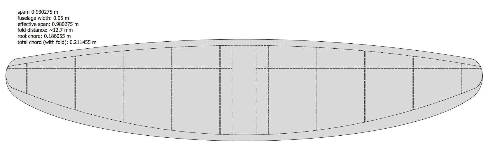
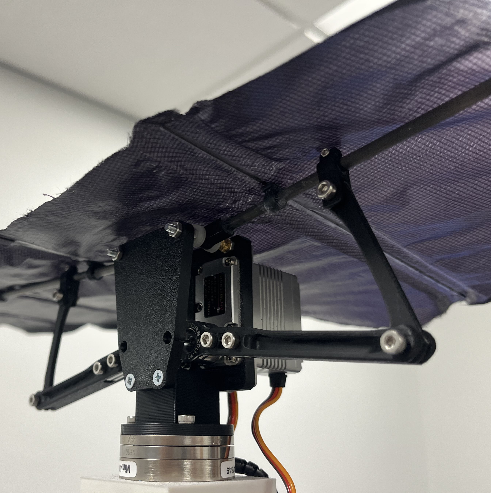
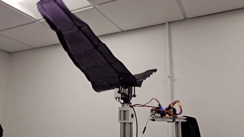

Under the advising of Dr. Nak-seung Patrick Hyun and alongside Jeffery Zhou and Gilbert Chang, a gliding-enabled, mode-switching, unmanned sensing (GEMUS) flapping wing vehicle is being developed as a control system development platform to better understand how birds with high aspect ratio wings are able to conserve energy when faced via dynamic soaring. This is of particular interest because flapping wing vehicles have not previously been experimentally proven to be capable of dynamic soaring via the Rayleigh cycle. A large-scale robot with a high aspect ratio would be capable of high endurance during flight thanks to its ability to both glide and flap effectively without requiring high flapping frequencies, which are characteristics seen by seagulls and albatrosses. The end goal is to ultimately produce a platform that can "harvest" energy from wind disturbances to some extent to create the most energy-efficient flapping wing vehicle. The preliminary design has been partially validated through force transducer tests, with wind tunnel tests upcoming for further validation after further mechanical optimization is achieved.


The current flapping wing vehicle prototype, denoted as version 0, has a wingspan of 0.98 m and a chord length of 0.186 m. The semi-elliptical wing was fabricated by using a printed template from a wide-format printer
to guide a rotary fabric cutter through ripstop nylon fabric. The template, designed by me, is a CAD drawing with hidden edges visible to mark accurate carbon fiber spar placements for
assembly of the wing. The paper template, along with 3D printed spacers for the spars and heat-activated adhesive strips allow for a wing to be fabricated and assembled in around 2-3 hours.
In the future, a new template will be utilized that has a span of 1.325 m and a chord length of 0.3 m.
Version 0's wings are driven by two ProModeler DS635BLHV servos whose rotations are transferred to the wing roots via an uneven four-bar linkage that effectively doubles the
output angular velocity of each wing without the use of gears. The fuselage and wing-driving linkages are additively manufactured via
fused deposition modeling with PLA filament. For the next version, we intend to select a faster servo to enable higher flapping frequencies above 5 Hz, but are still
undergoing simulations in Ansys Fluent (k-ω transient solver) to estimate the torque required for one flapping cycle. The robot is controlled using the CrazyFlie system,
while force transducer data is collected from an ATI Mini40-E.

GEMUS is still early in the development phase, but has proven to be effective at wing flapping. In the most recent force transducer test for version 0, the robot was able to
produce 515 grams of thrust and 180 grams of lift. With the robot weighing around 250 grams, the lift-to-weight ratio is less than 1. However, at non-zero angles of attack,
GEMUS would, in theory, easily be capable of producing enough force to stay airborne because of the additional vertical contribution from the thrust vector.
After optimizing the wing flapping mechanism to maximize force production, the robot will undergo subsonic wind tunnel tests to better understand flapping performance in non-zero freestream velocity
as well as gliding performance once we introduce artificial camber by tensioning our wing.